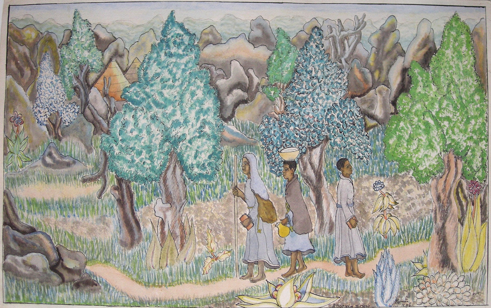

Adomech Moyo
1926–1970
Artist Biography
Adomech Mbenge Moyo was born in Matabeleland South in Zimbabwe (then colonial Rhodesia). A paraplegic as a result of polio, he attended Cyrene mission school for some five years in the 1940s. Ned Paterson, who ran the school, encouraged the pupils to experiment in art using Western materials and drawing on a Christian ethos but using local traditions too. Moyo was gifted and became one of the foremost artists of the school. Queen Elizabeth (later known as The Queen Mother) is said to have purchased a Moyo painting on a visit to Cyrene in 1947; better documented is her buying a Moyo work ‘Christ and the Councillors’ at the Cyrene exhibition held in 1949 at the Royal Watercolour Society in Conduit Street Galleries, London. That year Moyo was appointed to teach art therapy at a hospital in Johannesburg, South Africa but, apparently blocked from doing so by the apartheid authorities, returned to Bulawayo Hospital where he became the first teacher of occupational art therapy in Southern Africa. Here Paterson said Moyo was “a tiny ant against a mountain of need” but many of his students went on to win multiple prizes at local art competitions and Moyo can be considered an important figure in the development of modern art in Zimbabwe. The Cyrene Collection has four of his works.

Untitled, 1946